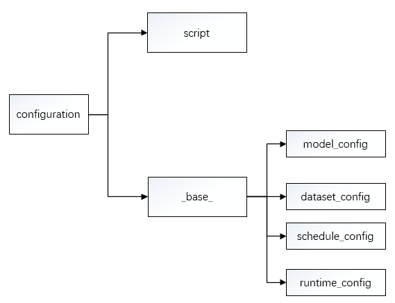
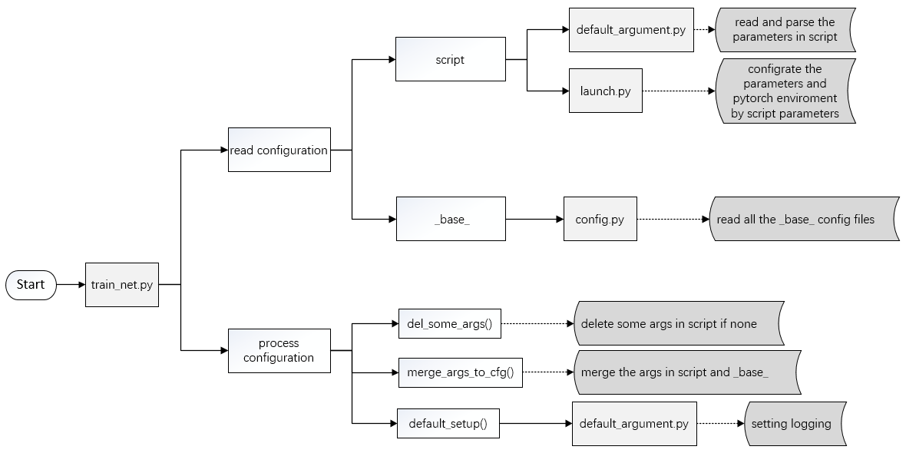

Tutorial 1: Learn about Configs
In MIX-Kalman, we provide you with multiple models, datasets, schedules configs and default runtime setting. Users can update parameter value by command line. And all the config information will be saved to tools/work_dirs/config.json and print on the console when you run task if you want to have a check.
The configuration
The configuration include two parts: the script and the _base_, which is as follow:

The script configuration
Before submitting jobs using tools/run.py, you may specify some argument through script. You can get help of all arguments by running
python tools/run.py --h # run script
which are shown as belows:
python tools/run.py --h # run script
usage: run.py [-h] [--config-file FILE] [--resume-from RESUME_FROM]
[--load-from LOAD_FROM] [--eval-only] [--build-submit]
[--gpus GPUS] [--machines MACHINES]
[--node-rank NODE_RANK] [--work-dir WORK_DIR]
[--seed SEED] [--master-port MASTER_PORT]
[--master-addr MASTER_ADDR]
optional arguments:
-h, --help show this help message and exit
--config-file FILE train config file path
--resume-from RESUME_FROM
resume from the checkpoint file
--load-from LOAD_FROM
load from the checkpoint file
--eval-only just run evaluation
--build-submit generate submission results
--gpus GPUS the number of gpus on each machine
--machines MACHINES the total number of machine to use
--node-rank NODE_RANK
the rank of current node(unique per machine)
--work-dir WORK_DIR the dir to save logs and models
--seed SEED random seed
--master-port MASTER_PORT
it is the free port of mast node(rank 0) and is used
for communication in distributed training
--master-addr MASTER_ADDR
the IP address of mast node(rank 0)
The _base_ config file
Before submitting jobs using tools/run.py, you also need to specify the _base_config file. Use MCAN model as an example. And assume that you want to do VQA task, then you should set as
python tools/run.py --config-file yourpath/MIX-Kalman/configs/MCAN/mcan_vqa.py
The mcan_vqa.py config file path is as below:
MIX-Kalman
├── configs
│ ├── mcan
│ │ ├── mcan_vqa.py
│ │ ├── ...
│ ├── ...
├── demo
├── ...
And in the mcan_vqa.py, we set the _base_ config as below:
_base_ = [
'../_base_/models/mcan_config.py',
'../_base_/datasets/vqa_dataset_grid_data.py',
'../_base_/schedules/schedule_vqa.py',
'../_base_/default_runtime.py'
]
There are 4 component in the _base_ config, which are corresponds to the four basic component under config/_base_: datasets, models, schedules, default_runtime. Many methods could be easily constructed with one of each in models.
MIX-Kalman
├── configs
│ ├── _base_
│ │ ├── datasets
│ │ │ ├── vqa_dataset_grid_data.py
│ │ │ ├── ...
│ │ ├── models
│ │ │ ├── mcan_config.py
│ │ │ ├── ...
│ │ ├── schedules
│ │ │ ├── schedule_vqa.py
│ │ ├── default_runtime.py
│ ├── mcan
│ │ ├── mcan_vqa.py
│ │ ├── ...
│ ├── ...
├── demo
├── ...
If you are building an entirely new method that does not share the config with any of the existing methods, you may do the following steps:
Create a folder
xxxunderconfigs, likemcan.Add the module in that folder to specify the
_base_.Add the new configs under the four basic components if necessary, such as:
add the corresponding
model.pyunderconfigs/_base_/models/;modify or add the
dataset.pyunderconfigs/_base_/datasets/;modify or add the
schedule.pyunderconfigs/_base_/schedules/.
Configuration Reading Process
the script path should be set as your_path/MIX-Kalman/tools/run.py. In the run, it will finish the following steps as follows:
read and parse the parameters in script;
configrate the parameters and pytorch enviroment by script parameters;
read all the base config files;
delete some args in script if none;
merge the args in script and base;
setting logging.

The code about the config in the run.py is as follows:
def del_some_args(args):
if args.seed is None:
del args.seed
if args.work_dir is None:
del args.work_dir
if not args.load_from:
del args.load_from
if not args.resume_from:
del args.resume_from
def merge_args_to_cfg(args, cfg):
for k, v in vars(args).items():
cfg[k] = v
def init_set(args):
cfg = mixk_config.fromfile(args.config_file) # read all the _base_ config files
del_some_args(args) # delete some args in script if none
merge_args_to_cfg(args, cfg) # merge the args in script and _base_
default_setup(args, cfg) # setting logging
return cfg
def main(args):
cfg = init_set(args)
if cfg.eval_only:
return test(cfg)
else:
return train(cfg)
if __name__ == '__main__':
args = default_argument_parser().parse_args() # read and parse the parameters in script
print('Command line Args:', args)
ddp_launch(
run_fn=main,
gpus=args.gpus,
machines=args.machines,
master_addr=args.master_addr,
master_port=args.master_port,
run_fn_args=(args, ))
FAQ
Use common variables in configs
Some common variables are used in the configs files, like train_data,test_data,post_processor in datasets.
It’s worth noting that when modifying common variables in the children configs, user need to pass the common variables into corresponding fields again.
The common variables in the vqa_dataset.py are as below.
train_data = dict(
samples_per_gpu=4,
workers_per_gpu=1,
sampler_name='TrainingSampler',
data=dict(
type=dataset_type,
reader=vqa_reader_train_cfg,
info_cpler=vqa_info_cpler_cfg,
limit_nums=400))
test_data = dict(
samples_per_gpu=16,
workers_per_gpu=1,
sampler_name='TestingSampler',
data=dict(
type=dataset_type,
reader=vqa_reader_test_cfg,
info_cpler=vqa_info_cpler_cfg),
eval_period=5000)
post_processor = dict(
type='Evaluator',
metrics=[dict(type='VQAAccuracyMetric')],
dataset_converters=[dict(type='VQADatasetConverter')])
We first define the new train_data/test_data/post_processorand pass them into data.